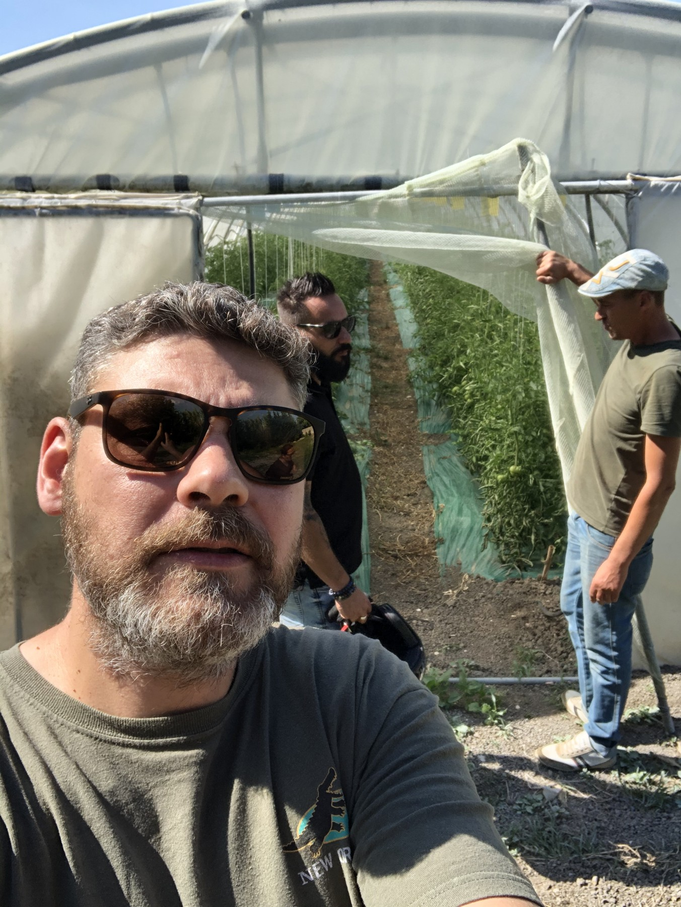
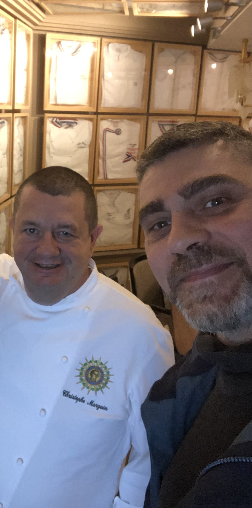
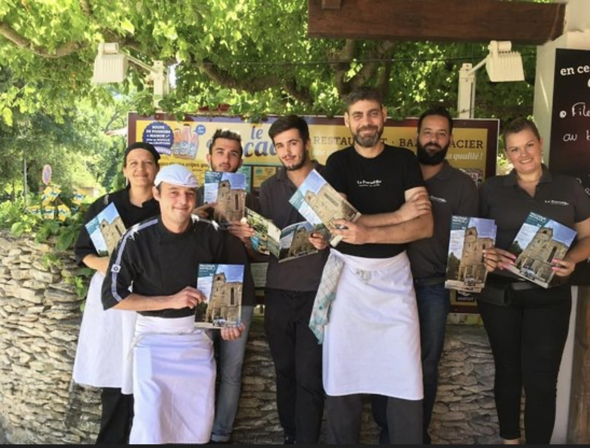

Le terrain pour point de départ. Le chef au cœur du projet.
UN PROJET NÉ DU TERRAIN
30 ans de cuisine. Le quotidien du chef en tête.
Trente ans d’expérience, dont quinze ans en tant que chef de cuisine : David Guezet connaît les exigences du métier, du choix des produits à l’organisation du service.
Son exigence de Maître Restaurateur et les nombreuses techniques de cuisson acquises, dont le sous vide, nourrissent une même attention à la qualité des produits et au travail en cuisine.
La Part du Chef prolonge ce vécu : un projet d’application pour faciliter le chef dans son quotidien, notamment ses commandes, en regroupant tous ses fournisseurs, grands et petits.
DES FOURNISSEURS AU SERVICE
L’exigence du produit. La réalité d’une cuisine.
Les rencontres, le savoir-faire et le travail d’équipe sont le point de départ de ce projet.

01 / LES FOURNISSEURS
Tout commence par le produit.
Petits producteurs, artisans, distributeurs ou grandes structures : les fournisseurs ont chacun leur place dans le quotidien d’une cuisine. L’exigence sur les produits est le point de départ.

02 / L’EXIGENCE DU CHEF
Le savoir-faire en cuisine.
Maître Restaurateur, David s’appuie sur trente ans d’expérience et la maîtrise de nombreuses techniques de cuisson, dont le sous vide, pour mettre les produits au cœur de son approche.

03 / L’EXPÉRIENCE D’ÉQUIPE
Penser au quotidien du chef.
Quinze ans comme chef de cuisine : une expérience du service et du travail d’équipe qui nourrit l’envie de simplifier l’organisation et les commandes du chef.
LE FONCTIONNEMENT ENVISAGÉ · EN CONSTRUCTION
Les fournisseurs réunis. Les commandes simplifiées.
01
Regrouper ses fournisseurs
L’objectif : retrouver ses fournisseurs, grands et petits, au sein d’une même application.
02
Préparer ses commandes
Le projet vise à faciliter les commandes du chef en partant des besoins concrets de sa cuisine.
03
Simplifier son quotidien
L’ambition : une organisation plus simple pour laisser davantage de place aux produits, à la cuisine et à l’équipe.
L’application est en construction. Ce parcours présente l’intention du projet.
DANS LE PROLONGEMENT DU MÉTIER
En cuisine aujourd’hui. Un projet pour demain.
Les prestations de chef privé et l’accompagnement des restaurateurs restent au cœur de l’activité de David Guezet. La Part du Chef prolonge cette expérience avec un projet pensé pour faciliter le quotidien et les commandes du chef.
L’application est en cours de construction. Pour parler du projet ou de vos besoins en tant que restaurateur ou fournisseur, contactez David directement.